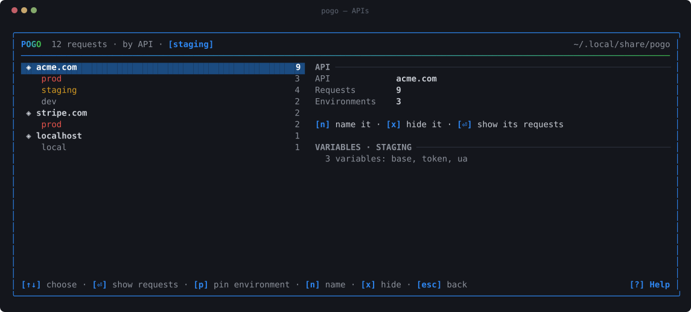

APIs and environments
One API is one registrable domain. Everything below follows from that, and every inference pogo makes from it is correctable.
One API, however many hosts it has
$ pogo api acme.com 9 requests prod api.acme.com 3 staging api.staging.acme.com 4 dev dev-api.acme.com 2 stripe.com 2 requests prod api.stripe.com 2 localhost 1 requests local localhost:3000 1
Reading the hostname
The API is the registrable domain — the part you could
buy — resolved against the public suffix list. So
api.acme.co.uk is acme.co.uk rather than
co.uk, and you.github.io is its own API rather
than everyone's.
IP addresses, localhost and single-label hostnames are
their own APIs. There is nothing above them to group by.
Only the labels above the registrable domain are read, so a
company that is actually called Staging is not mistaken for an
environment: staging.co.uk is production.
| in the hostname | environment |
|---|---|
| staging · stage · stg | staging |
| preprod · pre-prod | preprod |
| dev · develop | dev |
| test · qa · uat · integration | test |
| sandbox · sbx | sandbox |
| localhost · 127.0.0.1 · *.local · private IPs | local |
| nothing · prod · production · live · api · www | prod |
Both separators are read, so api.staging.acme.com and
dev-api.acme.com are both understood.
Correcting a guess
Every line above is a guess, and a guess you cannot argue with is a bug you have to live with. All of them are overridable — and an override wins from then on, including backwards, over the history already recorded.
It guesses
Registrable domain for the API; subdomain and port for the environment.
You correct it
One keypress in the UI, or one command. Written to disk immediately.
It stays corrected
Stored in config.yaml, applied to every request that host
ever made.
$ pogo api pin api-2.acme.com staging # it is staging; stop guessing $ pogo api move localhost:3000 acme.com # this is our API, running locally $ pogo api name acme.com Acme # call it what you call it $ pogo api hide cdn.acme.com # keep it out of the sidebar
Each has an empty form that goes back to the guess. In the UI it is the same
thing with the keys beside it — A, then p,
n or x.

A name that is global, values that are not
“staging” means the same word everywhere. What it points at belongs
to one API. So {{base}} is acme's staging host for an acme
request and the payments team's for a payments one, and neither of them has
to be called acme_staging_base.
$ pogo env set staging --api acme.com base=https://api.staging.acme.com $ pogo env set staging --api acme.com token=sk_test_9f2b1c $ pogo env set staging ua=pogo/1.0 # no --api: shared by everything $ pogo env use staging $ pogo curl -H "Authorization: Bearer {{token}}" '{{base}}/users'
Values resolve by layering: the shared set for that environment first, then the API's own on top, because the more specific statement is the one you meant.
The token never lands in history
Variables are expanded on the way to curl and nowhere else. curl
receives Bearer sk_test_…; history.jsonl
receives Bearer {{token}}.
And a replay six weeks later resolves the variable again, so it uses the token you have now rather than the expired one you captured.
Environments live in a file of their own, mode 0600,
because it holds what history deliberately does not.
active: staging shared: staging: ua: pogo/1.0 apis: acme.com: prod: base: https://api.acme.com token: sk_live_… staging: base: https://api.staging.acme.com token: sk_test_…
Which API's values?
Usually the URL says. When the URL is itself a variable —
{{base}}/users, which is the whole reason to write one — there
is no host to read, so pogo asks in order: --pogo-api on the
command, POGO_API in the environment, and finally whether
exactly one API defines every variable the command mentions.
That last rule is deliberately narrow: two candidates means pogo picks neither and leaves the braces in, so the request fails loudly instead of quietly calling the wrong environment.
Replaying across environments
Select a request you made against production, switch environment,
replay. Same request, different target, both in your history side by
side — press d on the two to see exactly how the
environments differ.

The full reference, including undefined variables and the exact syntax, is in docs/apis.md.